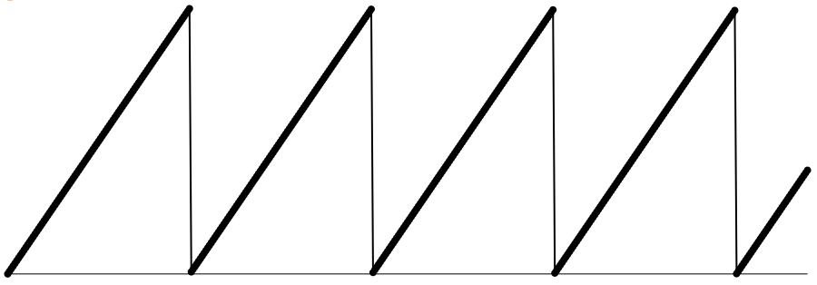

In the context of computer music, a phasor means a signal that goes in a linear ramp from 0 to 1 repeatedly at a given frequency, completing a certain number of ramps per second. It can be used to read over-and-over through a lookup table (an array) containing some stored shape, generating a cyclical repeating pattern. That array might contain samples of an actual recorded sound—a sound clip—and the phasor would be used to read through it, thus playing a repeating loop. Or the array might contain the shape of a single cycle of a sound wave, and the phasor would read through it at an audible rate to create a cyclical tone.
Before giving examples of its usage, let's spend a minute understanding how to make such a ramp from 0 to 1, given a particular sample rate and a given frequency. The first output sample will be 0, and for each subsequent sample we will increment the value by the frequency f over the sample rate R. And if the result equals or exceeds 1, we throw away the integer part and keep the fractional part, thus ensuring that the phasor value always stays between 0 and (just less than) 1.
For example, if the sample rate is 44,100 Hz, and the frequency of the phasor is 1 Hz, each output sample would increase by 1/44100 (0.00002267574), so that after 44,100 such increments we will have completed the ramp from 0 to 1 (which will then wrap around to 0). If the frequency of the phasor were 440 Hz, we would increment by 440/44100 (0.00997732426), which would result in completing exactly 440 ramps from 0 to 1 per second.

Graph of 10 ms (441 samples) of a 440 Hz phasor with a sample rate of 44,100 Hz
Here's some example code to demonstrate this phasor algorithm.
var samplerate = 44100.; // samples per second
var frequency = 1.; // ramps per second, from 0 to 1
var increment = frequency / samplerate; // how much to increase the phase
var phase = 0.; // the current value of the phasor
function phasor( arrayofsamples ) { // array passed in a callback
for ( let n = 0; n < arrayofsamples.length; n++ ) {
// for as many samples as we need to provide
arrayofsamples[n] = phase;
phase += increment; // calculate the next phase value
if ( phase >= 1. || phase < 0.) {
phase -= Math.floor( phase ); // keep it between 0 and 1
}
}
return;
}
In Max (and Pd) there's an object called phasor~ that performs this function. In gen~ there is an object called phasor that does the same.
This page is by Christopher Dobrian, dobrian@uci.edu.
Last modified March 31, 2019.